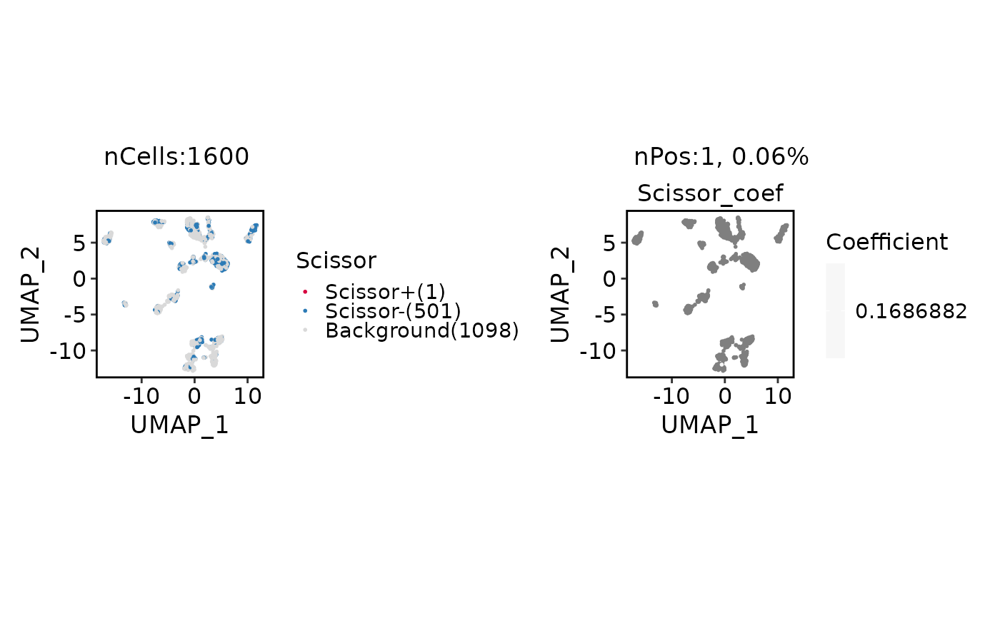
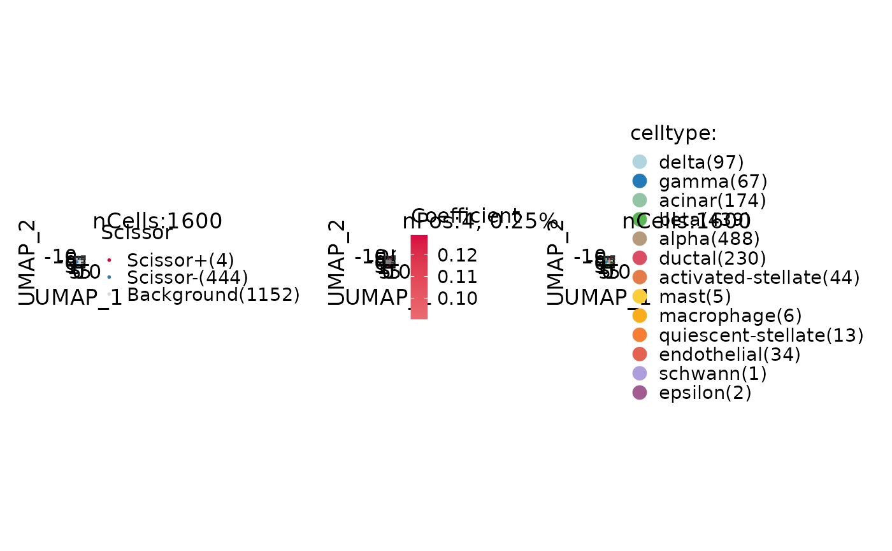
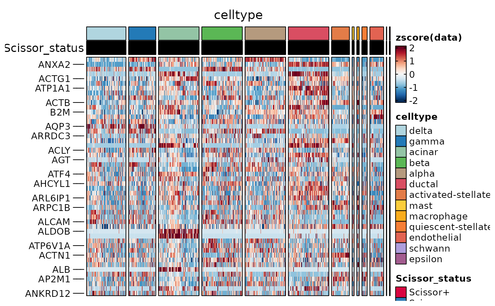
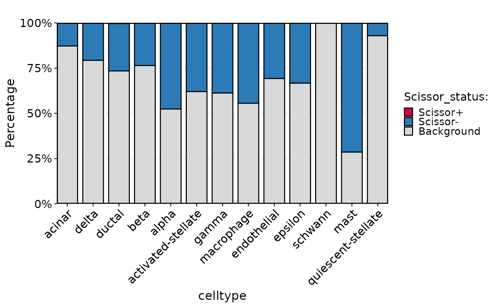

Plot Scissor results
Usage
ScissorPlot(
srt,
plot_type = c("umap", "heatmap", "bar", "upset", "rose", "ring", "pie", "dot"),
reduction = NULL,
prefix = "Scissor",
group.by = NULL,
split.by = NULL,
features = NULL,
nfeatures = 50,
feature_method = c("variance", "status_diff", "coef_cor", "input_order"),
tool_name = "Scissor",
status = c("Scissor+", "Scissor-"),
include.background = TRUE,
upset_top_n = NULL,
cells = NULL,
layer = "data",
assay = NULL,
max_cells = 100,
cell_order = NULL,
exp_method = "zscore",
stat_type = c("percent", "count"),
combine = TRUE,
nrow = NULL,
ncol = NULL,
byrow = TRUE,
pt.size = NULL,
pt.alpha = 1,
palette = "Chinese",
palcolor = NULL,
heatmap_palette = "RdBu",
group_palette = "Chinese",
group_palcolor = NULL,
cell_annotation = NULL,
cell_annotation_palette = "Chinese",
cell_annotation_palcolor = NULL,
show_row_names = FALSE,
show_column_names = FALSE,
cluster_rows = FALSE,
cluster_columns = FALSE,
theme_use = "theme_scop",
theme_args = list(),
verbose = TRUE,
...
)Arguments
- srt
A
Seuratobject after RunScissor.- plot_type
Plot type.
"umap"shows embedding panels,"heatmap"shows aFeatureHeatmap, and statistical views such as"bar"and"upset"are drawn with thisplot::StatPlot.- reduction
Which dimensionality reduction to use. If not specified, will use the reduction returned by DefaultReduction.
- prefix
Prefix used by RunScissor.
- group.by
Optional metadata column shown together with Scissor status. For
"heatmap", the default is the Scissor status column. For statistical plots, it is passed to thisplot::StatPlot, except that"upset"uses it to split Scissor status distributions by group.- split.by
Name of a column in meta.data column to split plot by. Default is
NULL.- features
A character vector of features to use. Default is
NULL.- nfeatures
Number of features to show when
plot_type = "heatmap"andfeatures = NULL.- feature_method
Method used to rank heatmap features when
features = NULL."variance"ranks genes by variance in selected cells,"status_diff"ranks by the largest mean-expression difference between Scissor status groups,"coef_cor"ranks by absolute correlation with Scissor coefficients, and"input_order"keeps the RunScissor input order.- tool_name
Name of the
srt@toolsentry created by RunScissor.- status
Scissor status levels included in the heatmap.
- include.background
Whether to include background cells in heatmap and background status in upset plots.
- upset_top_n
Maximum number of
group.bylevels to show inplot_type = "upset". The most frequent levels are kept.NULLkeeps all.- cells
A character vector of cell names to use.
- layer
Which layer to use. Default is
"counts".- assay
Which assay to use. If
NULL, the default assay of the Seurat object will be used. When the object also containsChromatinAssay, the default assay and additionalChromatinAssaywill be preprocessed sequentially.- max_cells
An integer, maximum number of cells to sample per group. Default is
100.- cell_order
A vector of cell names defining the order of cells. Default is
NULL.- exp_method
A character vector specifying the method for calculating expression values. Options are
"zscore","raw","fc","log2fc", or"log1p". Default is"zscore".- stat_type
Set stat types ("percent" or "count").
- combine
Whether to combine UMAP panels or StatPlot panels.
- nrow, ncol, byrow
Layout parameters passed to
patchwork::wrap_plots()or thisplot::StatPlot.- pt.size
The size of the points in the plot.
- pt.alpha
The transparency of the data points. Default is
1.- palette
Color palette name. Available palettes can be found in thisplot::show_palettes. Default is
"Chinese".- palcolor
Custom colors used to create a color palette. Default is
NULL.- heatmap_palette
A character vector specifying the palette to use for the heatmap. Default is
"RdBu".- group_palette
A character vector specifying the palette to use for groups. Default is
"Chinese".- group_palcolor
A character vector specifying the group color to use. Default is
NULL.- cell_annotation
A character vector specifying the cell annotation(s) to include. Default is
NULL.- cell_annotation_palette
A character vector specifying the palette to use for cell annotations. The length of the vector should match the number of cell_annotation. Default is
"Chinese".- cell_annotation_palcolor
A list of character vector specifying the cell annotation color(s) to use. The length of the list should match the number of cell_annotation. Default is
NULL.- show_row_names
Whether to show row names in the heatmap. Default is
FALSE.- show_column_names
Whether to show column names in the heatmap. Default is
FALSE.- cluster_rows
Whether to cluster rows in the heatmap. Default is
FALSE.- cluster_columns
Whether to cluster columns in the heatmap. Default is
FALSE.- theme_use, theme_args
Theme used by thisplot::StatPlot.
- verbose
Whether to print the message. Default is
TRUE.- ...
Additional arguments passed to CellDimPlot, FeatureDimPlot, FeatureHeatmap, or thisplot::StatPlot, depending on
plot_type.
Value
A ggplot/patchwork object for embedding and statistical plots, or a
list returned by FeatureHeatmap for plot_type = "heatmap".
Examples
data(panc8_sub)
data(islet_bulk)
panc8_sub <- RunScissor(
panc8_sub,
bulk_dataset = islet_bulk,
condition.by = "condition",
positive = "bfa",
family = "binomial",
features = head(intersect(
rownames(panc8_sub),
rownames(SummarizedExperiment::assay(islet_bulk, "counts"))
), 1000),
alpha = 0.2,
cutoff = 0.5
)
#> ℹ [2026-06-26 12:23:12] Build a temporary Scissor-style SNN graph
#> ℹ [2026-06-26 12:23:16] Scissor alpha 0.2 selected 4 positive and 444 negative cells (28%)
#> ✔ [2026-06-26 12:23:16] Scissor stored 4 Scissor+ and 444 Scissor- cells
panc8_sub <- standard_scop(panc8_sub, verbose = FALSE)
#> ℹ [2026-06-26 12:23:19] Skip `log1p()` because `layer = data` is not "counts"
ScissorPlot(
panc8_sub,
xlab = "UMAP_1",
ylab = "UMAP_2"
)

ScissorPlot(
panc8_sub,
group.by = "celltype",
xlab = "UMAP_1",
ylab = "UMAP_2"
)

ht <- ScissorPlot(
panc8_sub,
plot_type = "heatmap",
group.by = "celltype"
)
ht$plot

ScissorPlot(
panc8_sub,
plot_type = "bar",
group.by = "celltype"
)
#> Error in theme_scop(): could not find function "theme_scop"
ScissorPlot(
panc8_sub,
plot_type = "upset"
)
#> `geom_line()`: Each group consists of only one observation.
#> ℹ Do you need to adjust the group aesthetic?
#> `geom_line()`: Each group consists of only one observation.
#> ℹ Do you need to adjust the group aesthetic?

ScissorPlot(
panc8_sub,
plot_type = "rose",
label = TRUE
)
#> Error in theme_scop(): could not find function "theme_scop"
ScissorPlot(
panc8_sub,
plot_type = "ring",
label = TRUE
)
#> Error in theme_scop(): could not find function "theme_scop"
ScissorPlot(
panc8_sub,
plot_type = "pie",
label = TRUE
)
#> Error in theme_scop(): could not find function "theme_scop"
ScissorPlot(
panc8_sub,
plot_type = "dot",
label = TRUE
)
#> Error in theme_scop(): could not find function "theme_scop"